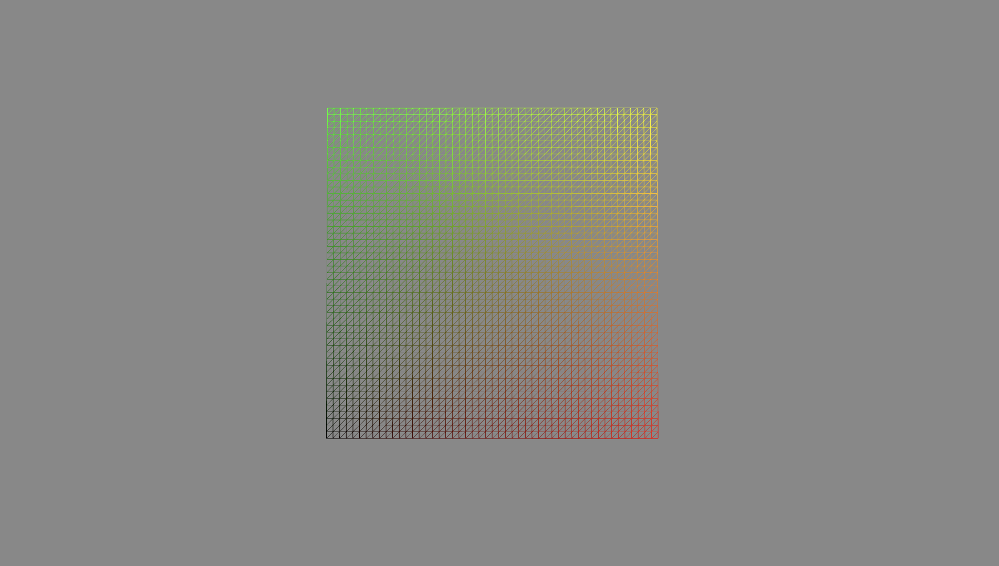
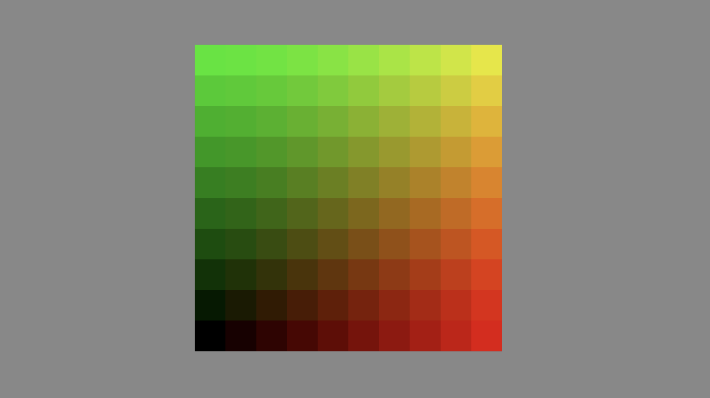
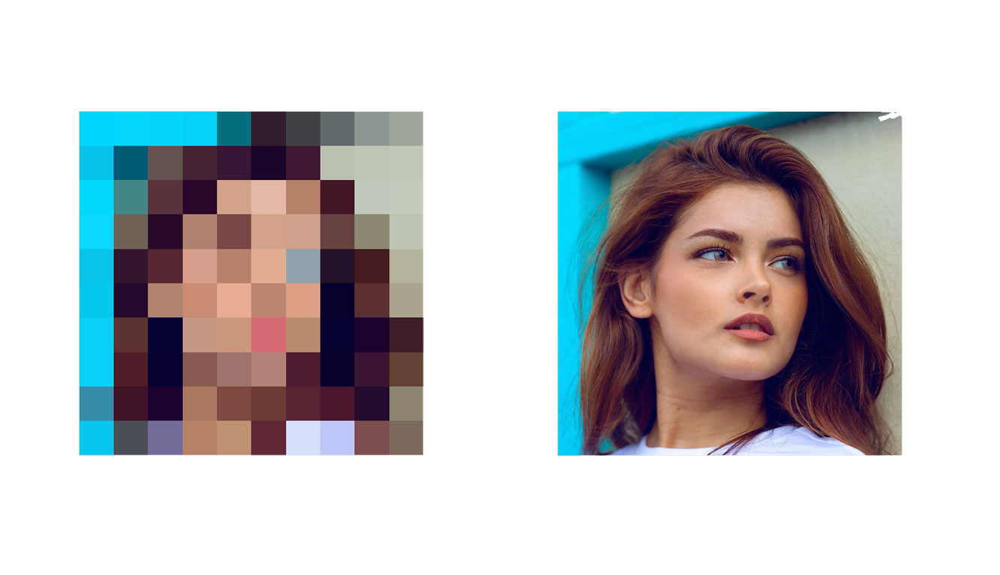
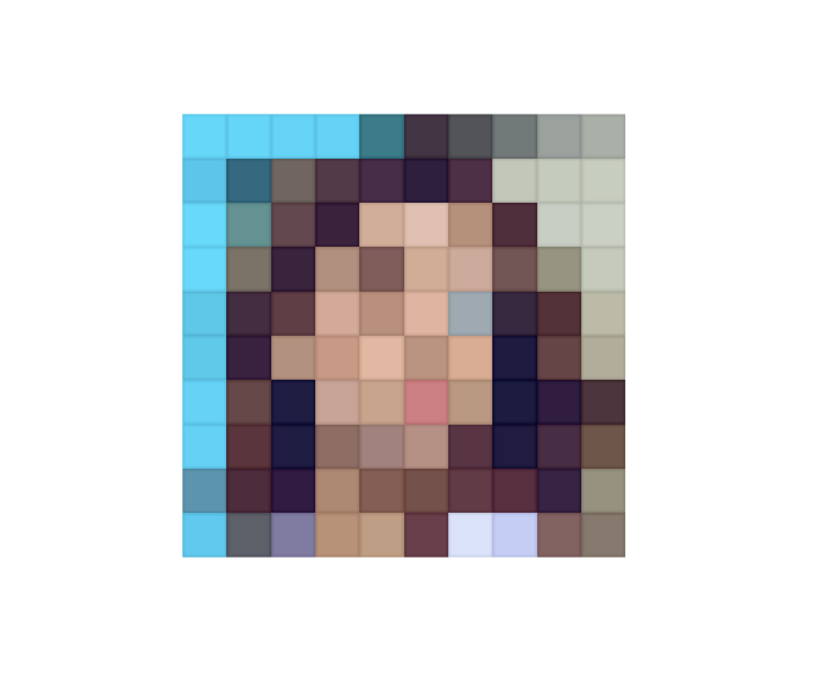
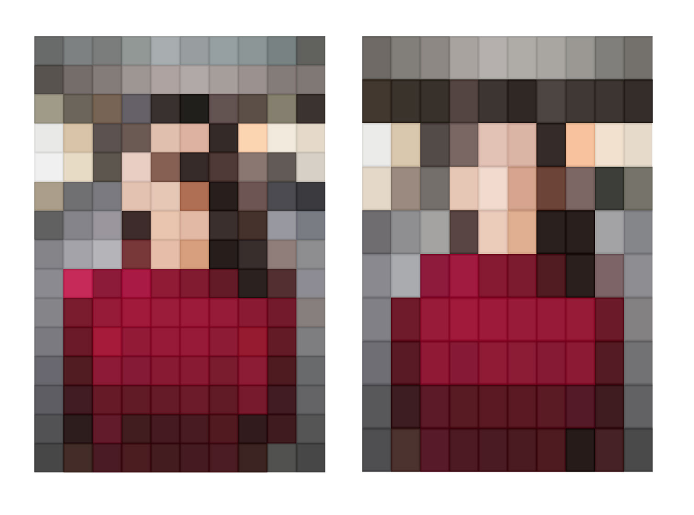

Having objects appear on scroll is almost a standard nowadays. Yet, there are not too many options when it comes to HTML. So i decided to spice it up a little with some WebGL effects!
Let's just look at a simplest PlaneGeometry object with a ShaderMaterial. What can we do here?
Well, actually a lot of things! You can check out the tutorial on unrolling images.
But this time i wanted to explore more pixelated effects. So how do you achieve pixellisation in shaders?
It's actually quite simple. You just have to round the UVs to the nearest pixel. And that's it! You have a pixelated effect. Let's say we want 10 "pixel" grid:
vec2 uv = floor(vUv * 10.0) / 10.0;

These are UVs, but by sampling the texture with them you will get this effect:
Just to underline the effect a little i have also added borders to each pixel:
Another small caveat is that if image is not square, you will get equal amount of rows and columns, hence - pixels wont be squares anymore. To work around that, instead of multiplying UVs with scalar value, we can do that with vec2
vec2 gridSize = vec2(
20.,
floor(20./ASPECT_RATIO)
);
vec2 uv = floor(vUv * gridSize) / gridSize;

This way we will have roughly square pixels, but also an integer amount of them in rows and columns! On top of it i added a couple more simple effects, like background curtain and changing amount of pixellisation. Here is the nice result:
There is a number of ways to connect HTML and our new effect. The simplest one nowadays would be to use React Three Fiber.
R3F has an amazing library of helpful modules thanks to Poimandres team. The library name is Drei and it has a <View /> component there.
The idea of this component is to be able to insert parts of your 3D scene right into your DOM. Which, yes, is basically magic (the one indistinguishable from advanced enough science😅)
This example is right from the docs:
//react code
return (
<main ref={container}>
<h1>Html content here</h1>
<!-- here we go, MESH in HTML, just like that -->
<View style={{ width: 200, height: 200 }} className="canvas-view">
<mesh geometry={foo} />
<OrbitControls />
</View>
<Canvas eventSource={container}>
<View.Port /> // this is where our Views will be in 3D world
</Canvas>
</main>
)
So, as you can see, we can just put our Three.js objects right into our HTML. And, as a bonus, we can use native HTML events to control them. This is a huge step forward in terms of integration of these two worlds.
So for my demo i was able to use native IntersectionObserver API to run all the animations in WebGL!
The last annoying bit is syncronisation issue between WebGL and HTML. Because those are still two different layers. All the WebGL is being rendered in fullscreen canvas on top of your page. These two worlds has to scroll together. And if you decide to use native scroll. Which is, well, natural. You will have a situation when HTML scrolls natively, and WebGL scrolls when it gets scroll event.
You could imagine those are the same thing, but there will be a slight delay and jiggering between layers
To overcome this, you should use custom scrolling solutions. Like Lenis or Locomotive scroll. In my case i used Lenis, as a global effect inside React Three Fiber:
import { addEffect } from "@react-three/fiber";
import Lenis from "@studio-freight/lenis";
const lenis = new Lenis();
addEffect((t) => lenis.raf(t));
So, now once our <View /> is inside viewport i will just change my materail uniform uProgress from 0 to 1. And that's it! I have a shader animation in HTML.
Another important thing to note here, is that even tho declaratively we have HTML and WebGL mixed up in this wonderful cocktail. They are two separate worlds, and, for example, usual React Three Fiber hooks, will not work with <View /> components.
function MyView(){
const { scene } = useThree()
>>R3F: Hooks can only be used within the Canvas component!
return (
<View style={{ width: 200, height: 200 }} className="canvas-view">
<mesh geometry={foo} />
<OrbitControls />
</View>
)
}
Because even though it is being inserted into Three.js scene via <View.port>, it's not really from WebGL root. It all looks so simple, but you have to keep in mind what is actually going on behind the scenes to understand these caveats.
But even taking these into account, you just cant underestimate how simple these things are becoming with React. I dont really like using React for animated scrollable landings, but, when integration is THAT easy, i will have to think thrice.
I hope you liked this integration example, share your ways of animating images, or examples that you like! And support open source developers, thanks to them we have such amazing infrastructures nowadays.